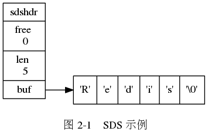
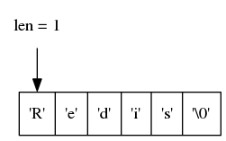
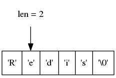
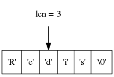
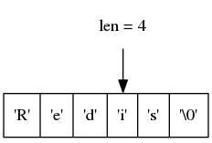
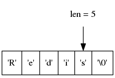
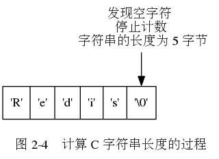

没有任何未使用空间的 SDS 示例。

带有五字节使用空间的 SDS 示例。
遍历 C 字符串并获取其长度的过程。






《Redis 设计与实现》图片集
第 3 章：链表
Enter search terms or a module, class or function name.
![digraph {
label = "\n 图 2-2 带有未使用空间的 SDS 示例";
rankdir = LR;
node [shape = record];
//
sdshdr [label = "sdshdr | free \n 5 | len \n 5 | <buf> buf"];
buf [label = "{ 'R' | 'e' | 'd' | 'i' | 's' | '\\0' | | | | | }"];
//
sdshdr:buf -> buf;
}](_images/graphviz-5fccf03155ec72c7fb2573bed9d53bf8f8fb7878.png)